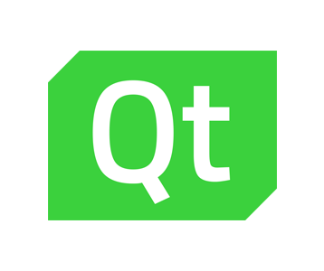

Speeddash
Onze software hebben we gemaakt in c++ omdat we de c taal al een beetje onder de knie hebben.
Qt hebben we gebruikt om de wijzers te maken omdat deze software een c++ code ondersteunt.
De code compatibel maken met linux was een must aangezien de raspberry pi op dit systeem werkt. Dit is natuurlijk niet erg voor ons c++ programma maar we moeten dan wel rekening houden met de extra libraries die we gaan includen, want ze werken niet allemaal voor linux. Zo hebben we bijvoorbeeld heel goed moeten opletten voor de library welke we gingen gebruiken om de bluetooth verbinding te laten werken met de obd link (auto).